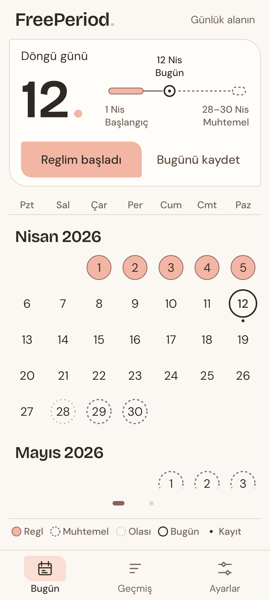
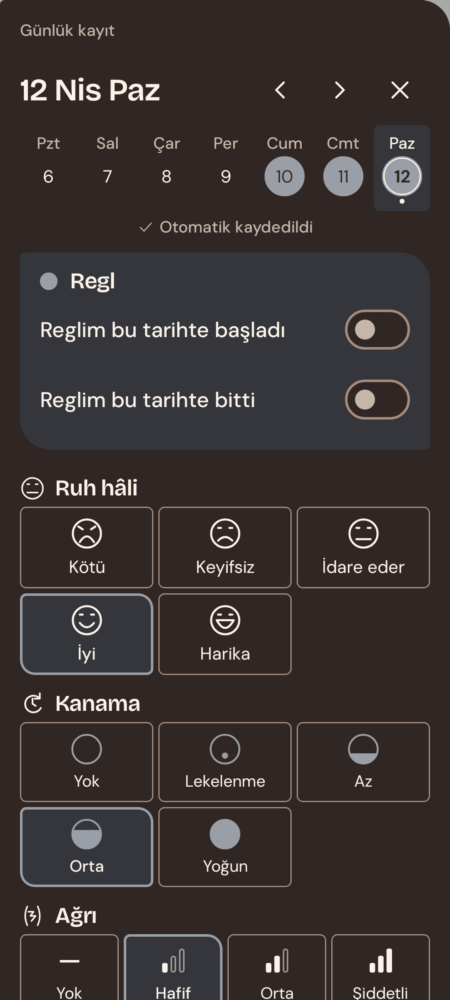
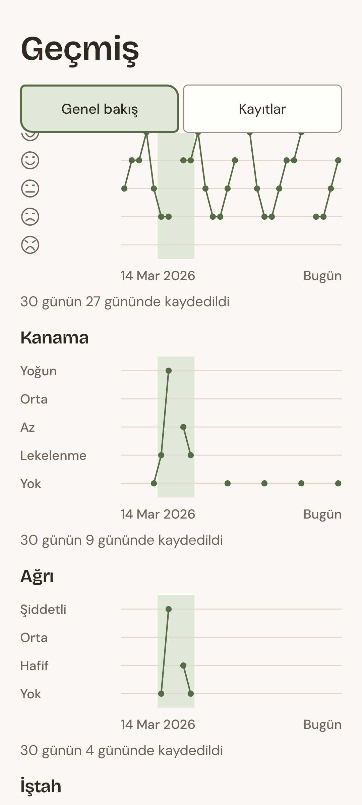
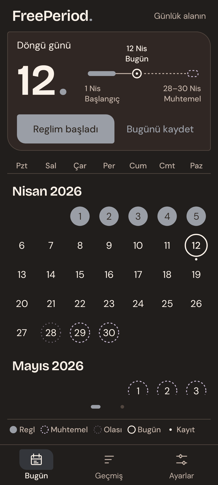
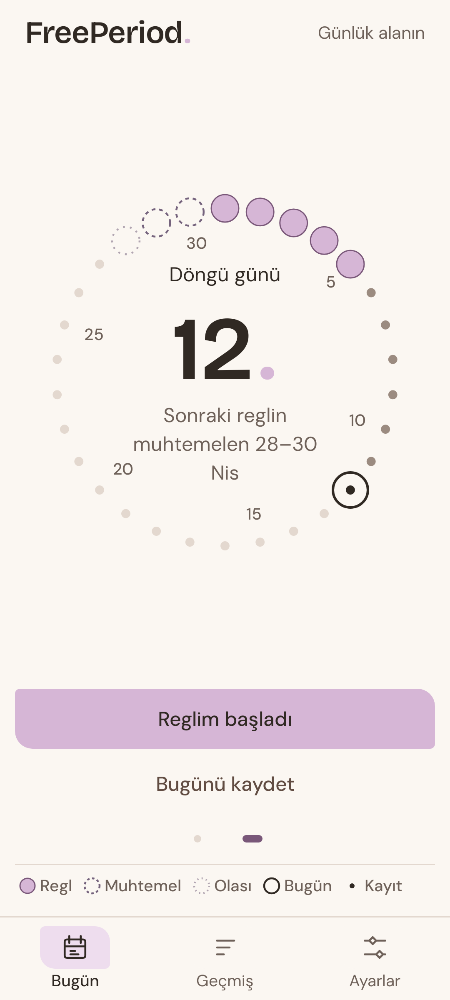
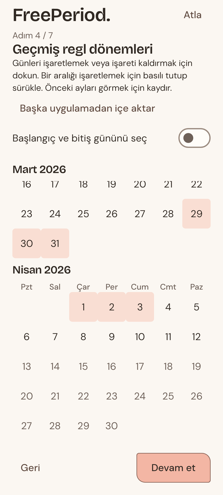

FreePeriod.
Döngün telefonunda kalır.
- İnternet izni yokUygulama internete hiçbir şey gönderemez.
- Hesap yok, reklam yokÜcretsiz, kayıt veya abonelik yok.
- İzleme yokKullanım analizi veya reklam takibi yok.
- Açık kaynakKodu herkes inceleyebilir.
Kendi kayıtlarına dayanan takvim tahminleri.

Ruh hâli, kanama, ağrı, belirtiler, notlar – istediğin gibi.

Bir haftadan bir yıla kadar grafikler.

Dokuz renk. Seçim senin.

Açık · Mercan
Koyu · Mürekkep
Takvim ve halka arasında kaydır.

Regl kayıtlarını dışa aktarım, CSV veya yedek dosyasından getir.
